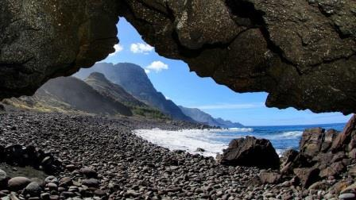
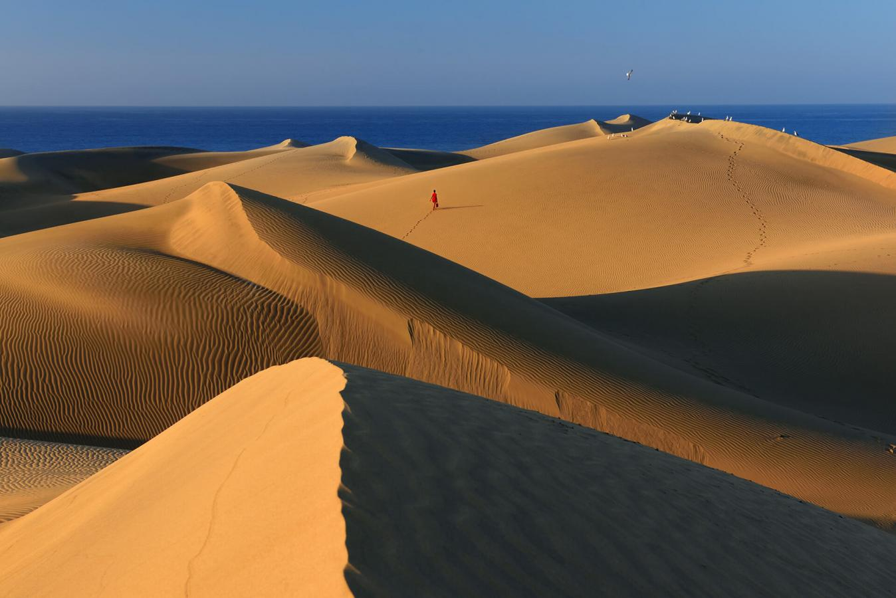
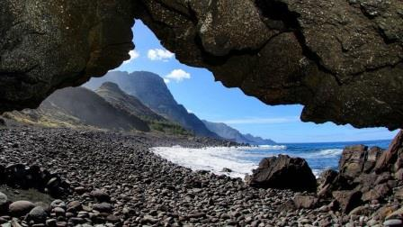
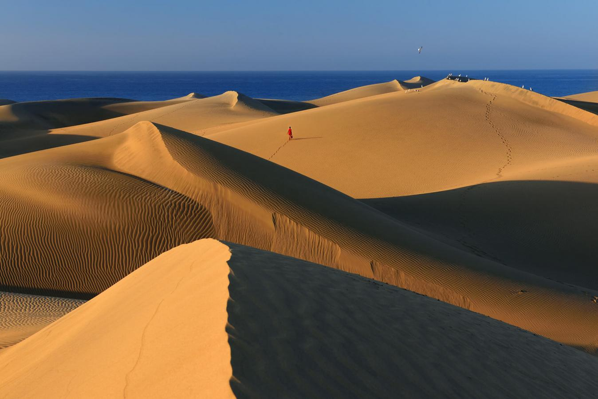

Playas
Las playas de Gran Canaria satisfacen a los viajeros que buscan el sosiego y a los intrépidos que persiguen la aventura. Unas están situadas en destacados enclaves turísticos, con todas los servicios y comodidades a disposición de los bañistas. Otras se encuentran en parajes solitarios y salvajes. Arenas negras y doradas, aguas tranquilas y fuertes oleajes… Contraste y diversidad animan la costa de una isla que invita a sumergirse en todo momento.
Decidir cuáles son las mejores playas en Gran Canaria no resulta sencillo. Depende de las búsquedas y de las necesidades de cada cual. Pero de lo que no cabe duda es de que la isla ofrece todo tipo de opciones. Sin moverse de la ciudad de Las Palmas, el visitante puede disfrutar de una impresionante playa urbana, Las Canteras. Si desea algo más exótico es recomendable que ponga rumbo a la costa sur. Y si opta por ambientes más familiares y tranquilos, el abanico de posibilidades también es amplio en la zona norte.
 


